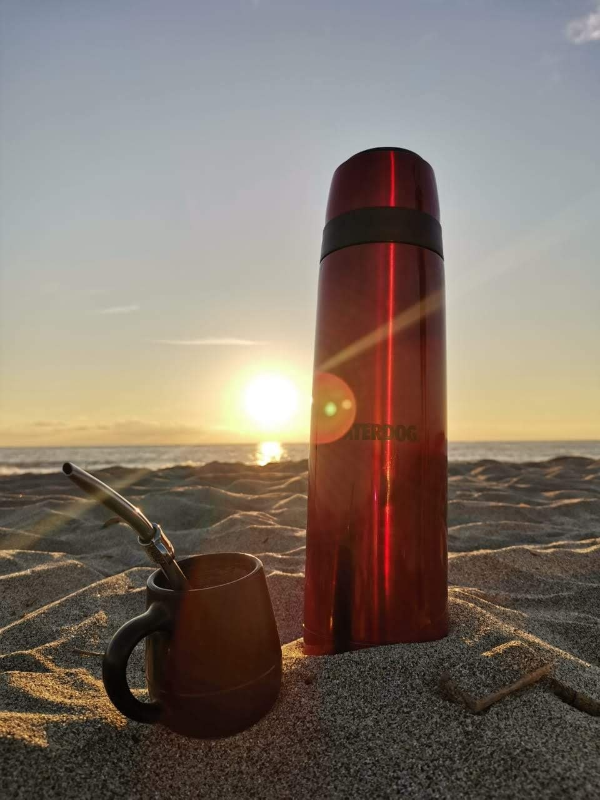

El mundo, con buen sabor
Guías de destinos para planificar tu próximo viaje: cuándo ir, cómo llegar, qué hacer, qué probar y qué traerte de recuerdo.
Elegí tu continente
Empezamos por América y vamos sumando destinos de todo el mundo.
América
8 destinosDe la Patagonia al Caribe, pasando por ciudades, selvas, montañas y viñedos.
Europa
PróximamenteCapitales históricas, pueblos con encanto y rutas de vino y café.
Asia
PróximamenteTemplos, mercados, ciudades enormes y cocinas para descubrir.
África
PróximamenteDesiertos, safaris y costas para viajes inolvidables.
Oceanía
PróximamenteIslas, playas y naturaleza en el otro extremo del mundo.
Destinos destacados
Cada guía reúne lo esencial para planificar: la mejor época, cómo llegar, los imperdibles y los sabores del lugar.
Barrios con identidad propia, cafés notables, tango y una de las escenas gastronómicas más intensas del continente.
La capital del Malbec: bodegas al pie de la Cordillera de los Andes, vendimia, aventura de montaña y el Aconcagua.
Lagos, bosques y montañas en el corazón de la Patagonia andina. Esquí en invierno, trekking en verano y chocolate todo el año.
La ciudad del fin del mundo: navegación por el Canal Beagle, el Parque Nacional Tierra del Fuego y la puerta de entrada a la Antártida.
La Linda: arquitectura colonial, peñas folclóricas, empanadas salteñas y paisajes de cerros de colores rumbo a los valles.
Una de las maravillas naturales del mundo, en plena selva misionera, y la tierra de la yerba mate.
Una de las ciudades más grandes del mundo: centro histórico, museos de primer nivel, barrios con encanto y una cocina que no se termina nunca.
Un centro histórico Patrimonio de la Humanidad, la Ruta del Arte, Queso y Vino y la Peña de Bernal, a pocas horas de la Ciudad de México.
Cada lugar tiene un sabor para llevarte
Viajar a Mendoza es conocer el Malbec; recorrer Misiones es entender la yerba mate. Por eso cada guía se conecta con los productos de ese lugar en la Tienda y con las notas del Blog.
Organizá tu viaje
Reservá con nuestros aliados y resolvé tus dudas antes de salir.
Vuelos, hoteles y paquetes
Buscá y compará vuelos, alojamiento, autos y paquetes en Despegar, nuestro aliado para reservar tu viaje.
- Vuelos y hoteles en todo el mundo.
- Paquetes con vuelo y alojamiento.
- Autos, traslados y asistencia al viajero.
Tu asistente de viaje
Muy pronto vas a poder consultarnos lo que necesites: qué ver, cómo moverte, qué llevar y qué probar en cada destino.
PróximamenteMis recomendaciones y tips
Experiencias, consejos y lugares que recomiendo para inspirar tu próximo destino.
Historias de viaje
Lo que viví en cada lugar: recorridos, encuentros y sabores.
PróximamenteConsejos prácticos
Qué llevar, cómo moverte, cuándo ir y cómo ahorrar.
PróximamenteLugares que recomiendo
Hoteles, restaurantes y experiencias que valen la pena.
PróximamenteTienda para viajeros
Estamos armando una selección de productos para tu próxima aventura.